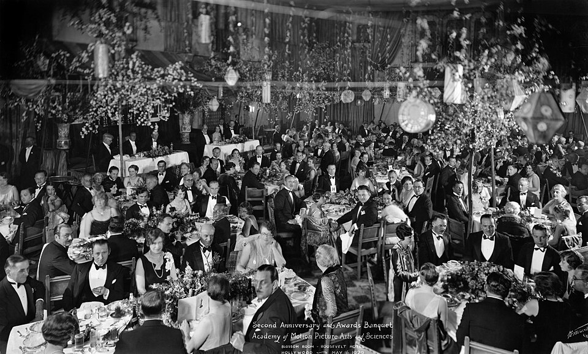
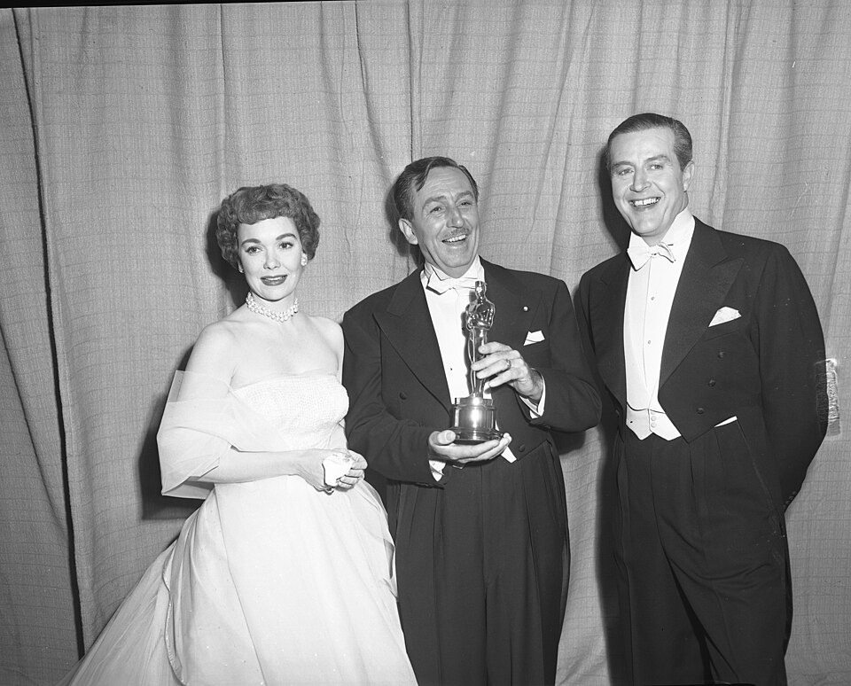
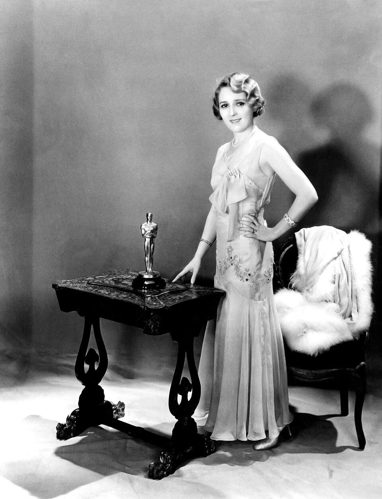
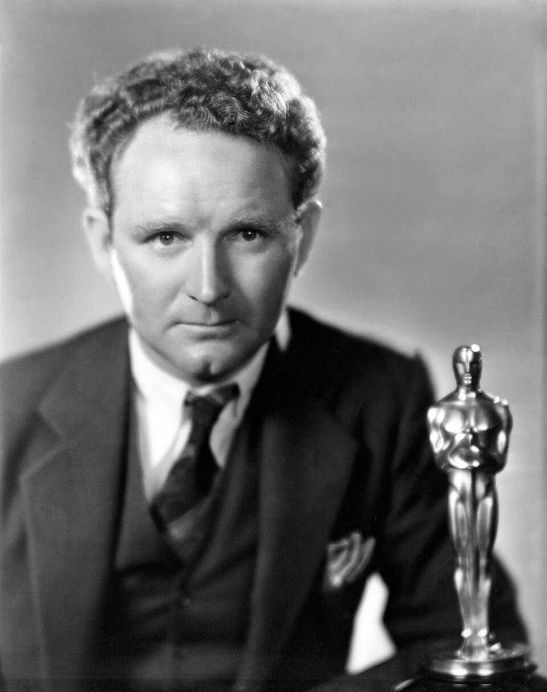
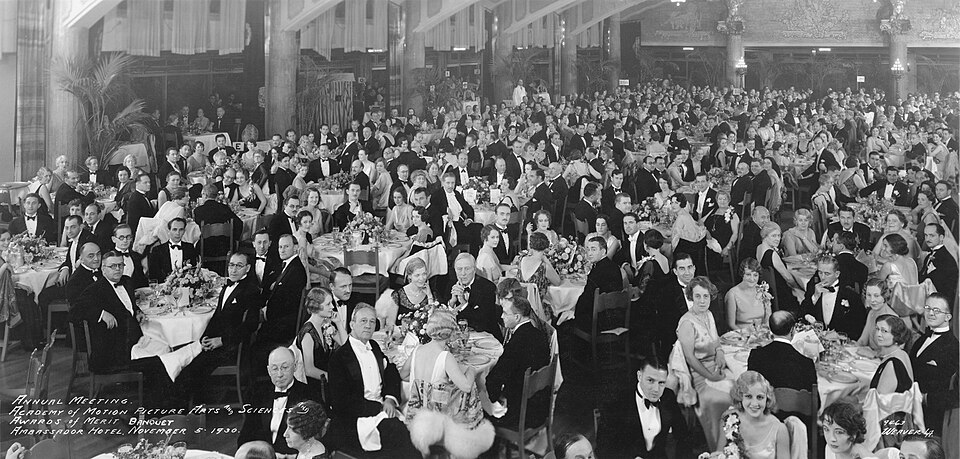
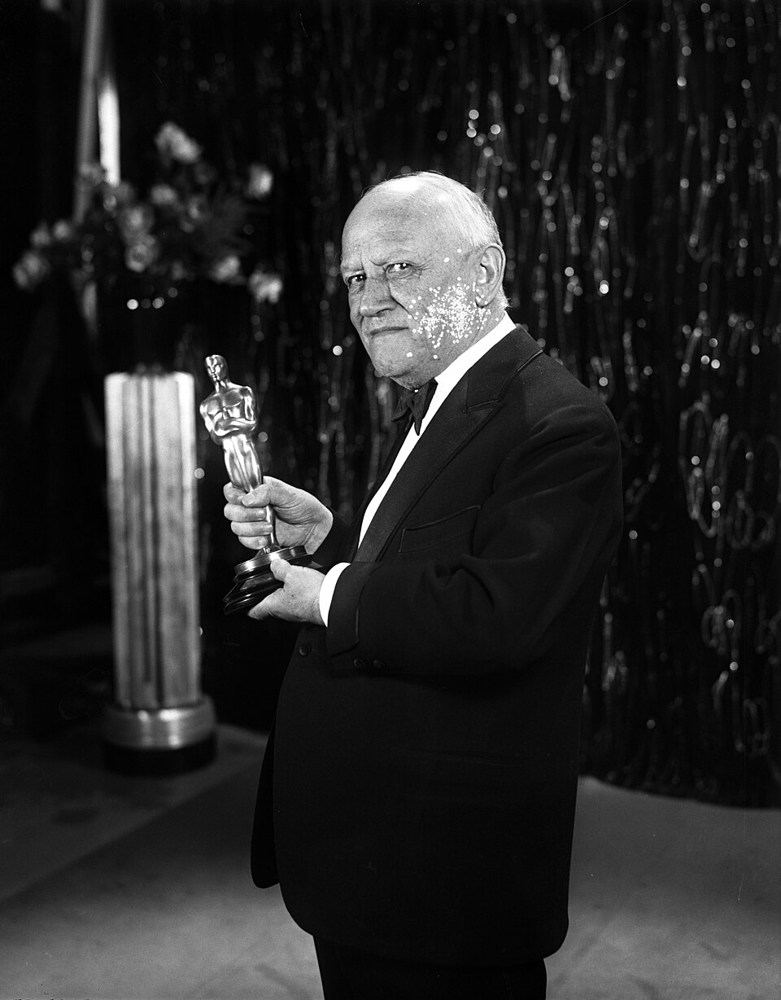
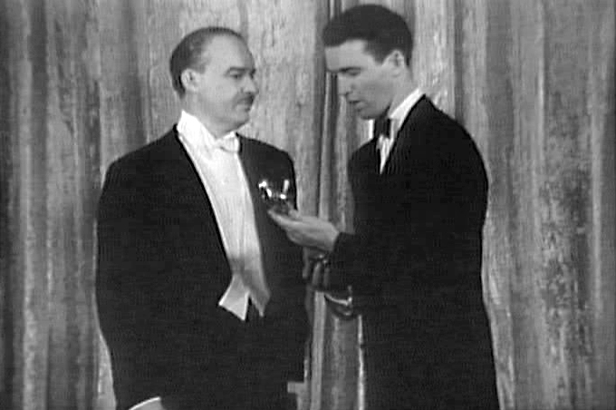

Стиль і форма
Артдеко. Лицар із мечем стоїть на котушці кіноплівки.
Кінопремія «Оскар» · 1929 — 2025
Найважливіші моменти головної кінонагороди світу — від першої 15-хвилинної церемонії в готелі «Рузвельт» до неангломовного «Паразита», що забрав «Найкращий фільм». 24 ключові події, зібрані з інфографіки та додаткових джерел.
Сторінка 80
Те, що зчитується з інфографіки — фактами, без води.
Артдеко. Лицар із мечем стоїть на котушці кіноплівки.
Актори, режисери, продюсери, техніки, сценаристи.
Німецький актор Еміль Яннінгс — за «Останній наказ» і «Шлях усякої плоті».
Скульптор Джордж Стенлі, художник-постановник Седрік Гіббонс.
50 статуеток — 3 місяці роботи.
Золоте покриття; в інфографіці згадано 4-каратне золото.
Висота 34 см, вага 3,9 кг.
В інфографіці — 1939 рік. Історично категорію запровадили для фільмів 1936 року, перші нагороди вручили 1937-го. Див. розділ «Джерела».
Сторінка 81
Найуспішніші фільми, акторські роботи та грошові рекорди.
Найкасовіший фільм в історії кіно. Перша темношкіра лауреатка — Гетті Макденіел.
Перший неангломовний фільм, що отримав «Оскар» за найкращий фільм. Також — «Золота пальмова гілка».
Волт Дісней — 22 статуетки. Серед акторів — Кетрін Гепберн, 4 «Оскари». Найчастіше номінована акторка — Меріл Стріп.
Збори — $390 млн (≈ $4 млрд за курсом 2022 року). «Звіяні вітром» — найкасовіший фільм в історії.
Завдання 3
24 ключові події — мінімум 20 виконано. Фільтруй за епохою.
Немає подій у цій епосі.
Архів
Справжні знімки з Wikimedia Commons — публічне надбання та CC. Автор і ліцензія вказані під кожним фото. Для одного знімка рік у підписі непевний: див. підпис під фото.







Уточнення
Де інфографіка неточна — і як насправді.